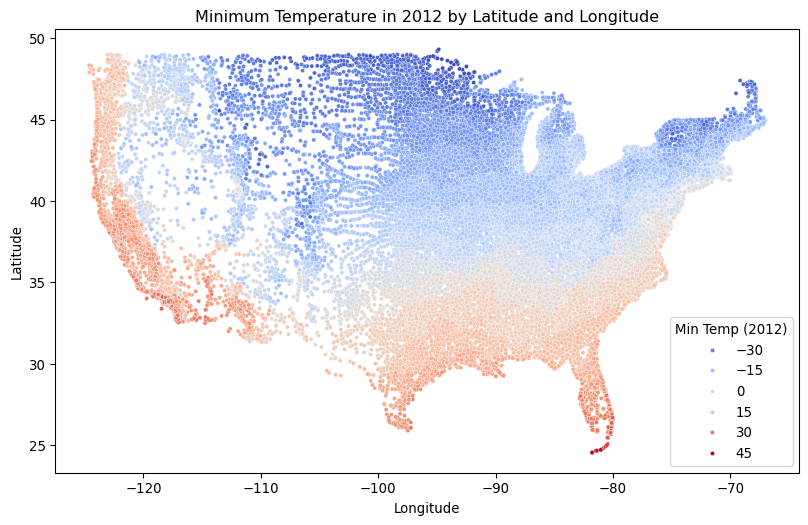

A cartoon panda is doing some gardeningMidjourney5
Introduction
Today, we will look at the latest plant hardiness zone map distributed in 2023 by the US Department of Agriculture (USDA), and how it differs from the previous map, which came out in 2012.
The map is meant to help gardeners, and people interested in gardening and plants, know which plants will survive and thrive in different parts of the United States. The main data point used by the map is the mean low temperature recorded (in Fahrenheit) for a given location. Locations with similar mean low temperatures, within a 10-degree range, are categorized as being in the same zone. Each zone is then further divided into two sub-zones, with a 5-degree range for minimum temperatures.
The latest zone map showed that for many locations, the minimum temperature had risen somewhat. This doesn’t come as a massive surprise, given trends in climate change, but I thought that it would be interesting to explore the data and understand just where things had changed.
The data was collected by the PRISM research group at Oregon State University (https://prism.oregonstate.edu/projects/plant_hardiness_zones.php). A new data set was just released on November 15th by the US Department of Agriculture, at https://www.ars.usda.gov/news-events/news/research-news/2023/usda-unveils-updated-plant-hardiness-zone-map/.
The data is available in a variety of formats, but I decided that it would probably be easiest to work with it via zip codes, because they are spread out through the entire country. In order to figure out just where the zip codes are located, we will download an additional data set, a map of zip codes along with location information for each one, joining it together with our other data.
Datasets
You will work with three CSV datasets:
First, we’ll use the latest (2023) Plant Hardiness Zone report from https://prism.oregonstate.edu/projects/plant_hardiness_zones.php . The data comes in several formats and parts; we’ll use the CSV file that provides us with data per US zip code:
Finally, we’ll download and work with a CSV file containing US zip codes:
http://uszipcodelist.com/zip_code_database.csv
Tasks
1. Setup
First, import pandas, matplotlib, and seaborn and load the three datasets.
Code
import pandas as pdimport matplotlib.pyplot as pltimport seaborn as sns# Define data urlsurl_2023 ='https://prism.oregonstate.edu/projects/phm_data/phzm_us_zipcode_2023.csv'url_2012 ='https://prism.oregonstate.edu/projects/public/phm/2012/phm_us_zipcode_2012.csv'url_zips ='http://uszipcodelist.com/zip_code_database.csv'# Load the datadf_2023 = pd.read_csv(url_2023)df_2012 = pd.read_csv(url_2012)df_zipcodes = pd.read_csv(url_zips)
Next, display the first few rows and print out the dataset info to get an idea of the contents of each dataset.
Code
# Display the first few rows:print(df_2023.head())print(df_2012.head())print(df_zipcodes.head())
zipcode zone trange zonetitle
0 501 7b 5 to 10 7b: 5 to 10
1 544 7b 5 to 10 7b: 5 to 10
2 1001 6b -5 to 0 6b: -5 to 0
3 1002 6a -10 to -5 6a: -10 to -5
4 1003 6a -10 to -5 6a: -10 to -5
zipcode zone trange zonetitle
0 1001 6a -10 to -5 6a: -10 to -5
1 1002 5b -15 to -10 5b: -15 to -10
2 1003 5b -15 to -10 5b: -15 to -10
3 1004 5b -15 to -10 5b: -15 to -10
4 1005 5b -15 to -10 5b: -15 to -10
zip type primary_city acceptable_cities \
0 501 UNIQUE Holtsville NaN
1 544 UNIQUE Holtsville NaN
2 601 STANDARD Adjuntas NaN
3 602 STANDARD Aguada NaN
4 603 STANDARD Aguadilla Ramey
unacceptable_cities state county \
0 I R S Service Center NY Suffolk County
1 Irs Service Center NY Suffolk County
2 Colinas Del Gigante, Jard De Adjuntas, Urb San... PR Adjuntas
3 Alts De Aguada, Bo Guaniquilla, Comunidad Las ... PR NaN
4 Bda Caban, Bda Esteves, Bo Borinquen, Bo Ceiba... PR Aguadilla
timezone area_codes latitude longitude world_region country \
0 America/New_York 631 40.81 -73.04 NaN US
1 America/New_York 631 40.81 -73.04 NaN US
2 America/Puerto_Rico 787,939 18.16 -66.72 NaN US
3 NaN 787 18.38 -67.18 NaN US
4 America/Puerto_Rico 787 18.43 -67.15 NaN US
decommissioned estimated_population notes
0 0 384 NaN
1 0 0 NaN
2 0 0 NaN
3 0 0 NaN
4 0 0 NaN
Code
# Display the dataframe info:print(df_2023.info())print(df_2012.info())print(df_zipcodes.info())
You may have noticed that the zipcodes were read in as integers rather than strings, and therefore might not be 5 digits long. Ensure the zipcode or zip column in all datasets is a 5-character string, filling in any zeros that were dropped.
Combine the 2012 and 2023 data together by adding a year column and then stacking them together.
Code
# Add the year columndf_2023['year'] =2023df_2012['year'] =2012# Bind the datasets togetherdf = pd.concat([df_2023, df_2012], axis=0)
In the combined plant hardiness dataframe, create two new columns, trange_min and trange_max, containing the min and max temperatures of the trange column. Remove the original trange column.
Hint: use str.split() to split the trange strings where they have spaces and retrieve the first and last components (min and max, respectively)
Code
# Split the trange string and get the first (min) and last (max) pieces of itdf['trange_min'] = df['trange'].str.split().str.get(0).astype(int)df['trange_max'] = df['trange'].str.split().str.get(-1).astype(int)df = df.drop('trange', axis='columns')
Tasks
2. Exploration and visualization
On average, how much has the minimum temperature in a zip code changed from 2012 to 2023?
Code
# Get the mean of the minimum temperatures mean_2023 = df[df['year'] ==2023]['trange_min'].mean()mean_2012 = df[df['year'] ==2012]['trange_min'].mean()# Print the difference between the two meansprint(mean_2023 - mean_2012)
2.917145601720649
Merge together the combined plant hardiness dataset and the zipcode dataset by zipcode. This will give us more informtaion in the plant hardiness dataset, such as the latitude and longitude for each zipcode.
Create two scatter plot where the x axis is the longitude, the y axis is the latitude, the color is based on the minimum temperature in 2012 for one and 2023 for the other. Only look at longitude < -60.
Code
# Filter the data for longitude less than -60df_filtered = df[df['longitude'] <-60]# Create scatter plot for 2012plt.figure(figsize=(10, 6))sns.scatterplot(data=df_filtered[df_filtered['year'] ==2012], x='longitude', y='latitude', hue='trange_min', palette='coolwarm', s=10)plt.title('Minimum Temperature in 2012 by Latitude and Longitude')plt.xlabel('Longitude')plt.ylabel('Latitude')plt.legend(title='Min Temp (2012)')plt.show()# Create scatter plot for 2023plt.figure(figsize=(10, 6))sns.scatterplot(data=df_filtered[df_filtered['year'] ==2023], x='longitude', y='latitude', hue='trange_min', palette='coolwarm', s=10)plt.title('Minimum Temperature in 2023 by Latitude and Longitude')plt.xlabel('Longitude')plt.ylabel('Latitude')plt.legend(title='Min Temp (2023)')plt.show()

Now create a single scatter plot where you look at the difference between the minimum temperature in 2012 and 2023. Only look at longitude < -60. Color any zipcodes where you do not have information from both years in grey.
Code
# Find the difference in minimum temperature between 2023 and 2012df_diff = df_filtered.pivot_table(index=['zipcode', 'latitude', 'longitude'], columns='year', values='trange_min').reset_index()df_diff['temp_diff'] = df_diff[2023] - df_diff[2012]# Create a scatter plot showing the differenceplt.figure(figsize=(10, 6))sns.scatterplot(data=df_diff, x='longitude', y='latitude', hue='temp_diff', palette='coolwarm', s=10, edgecolor='gray', legend='full')plt.title('Temperature Difference (2023 - 2012) by Latitude and Longitude')plt.xlabel('Longitude')plt.ylabel('Latitude')plt.legend(title='Temp Difference')plt.show()
Create a bar plot showing the top 10 states where the average minimum temperature increased the most. Label your axes appropriately.
Code
# Filter the data for only 2012 and 2023df_2012_filtered = df_filtered[df_filtered['year'] ==2012]df_2023_filtered = df_filtered[df_filtered['year'] ==2023]# Group by state and calculate the mean minimum temperature for 2012 and 2023mean_temp_2012 = df_2012_filtered.groupby('state')['trange_min'].mean()mean_temp_2023 = df_2023_filtered.groupby('state')['trange_min'].mean()# Calculate the difference between 2023 and 2012 for each statetemp_diff_by_state = mean_temp_2023 - mean_temp_2012# Sort the states by the highest temperature increase and get the top 10top_10_states = temp_diff_by_state.sort_values(ascending=False).head(10)# Plot the top 10 statesplt.figure(figsize=(10, 6))sns.barplot(x=top_10_states.values, y=top_10_states.index, palette='viridis')plt.title('Top 10 States with Highest Increase in Minimum Temperature (2012-2023)')plt.xlabel('Average Temp Increase (°F)')plt.ylabel('State')plt.show()
/var/folders/bs/x9tn9jz91cv6hb3q6p4djbmw0000gn/T/ipykernel_55825/2045411015.py:17: FutureWarning:
Passing `palette` without assigning `hue` is deprecated and will be removed in v0.14.0. Assign the `y` variable to `hue` and set `legend=False` for the same effect.
sns.barplot(x=top_10_states.values, y=top_10_states.index, palette='viridis')